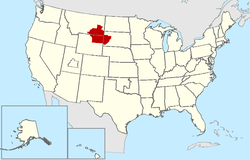

State of Absaroka
From Wikipedia, the free encyclopedia
| This article documents a current event. Information may change rapidly as the event progresses, and initial news reports may be unreliable. |
| This article needs additional citations for verification. Please help improve this article by adding reliable references. Unsourced material may be challenged and removed. (October 2009) |
| State of Absaroka (provisional) | |
Flag | |
 Area controlled by the provisional State of Absaroka (red), November 2009 | |
| Nickname | The Nation's Playground |
|---|---|
| Capital | Sheridan |
| Largest city | Rapid City (59,607 in 2000) |
| Provisional governor | Roy D. Ostby |
| Legislature | Convention of Counties |
| History | |
| - 1939 movement | March 1939 |
| - Sheridan County emergency | February 27, 2009 |
| - Sheridan Declaration | March 14, 2009 |
| - Black Hills counties join | April 6, 2009 |
| - Colstrip Agreement | June 19, 2009 |
| Area | |
| - Estimate | about 46,800 sq mi (121,000 km²) |
| Population | |
| - Estimate | about 290,000 (2008 county estimates) |
| Counties | 17 (3 in part) |
| Time zone | Mountain |
The State of Absaroka (pronounced ab-SOR-kə) is a provisional state proclaimed in March 2009 by counties of northern Wyoming, south-eastern Montana and western South Dakota, following the breakdown of state government in Cheyenne, Helena and Pierre after the Presidents' Day Massacre. Its capital is Sheridan and its largest city is Rapid City.
The name is taken from the 1939 statehood campaign led from Sheridan by A. R. Swickard, which in turn borrowed the Hidatsa name for the Crow, usually translated as "children of the large-beaked bird".[1] The provisional government controls about 46,800 square miles (121,000 km²); by the 2008 county estimates its population is roughly 290,000.[2] It is not recognized by the federal government in Sacramento, but trades electricity for fuel with the Federal Emergency Management Agency Northern Tier district to the north.
Contents[hide] |
[edit]History
[edit]1930s movement
During the Great Depression ranchers in the three corners of Wyoming, Montana and South Dakota complained that New Deal relief money went to towns near the state capitals, which were a long drive away by Model A. Talk of a new state began around 1935. In the spring of 1939 A. R. Swickard, a former minor-league ballplayer who had become Sheridan's street commissioner, took it over after first circulating a petition for Sheridan County to join Montana.[1] He and a handful of supporters drew the map of the new state in the basement of the Sheridan Rotary Club, cutting a straight line across northern Wyoming and western South Dakota and taking a square out of south-eastern Montana.[3]
Swickard appointed himself governor and began hearing "writs of grievance". Absaroka license plates and souvenir coins were issued, and supporters paraded a banner calling the state "the Nation's Playground".[4] Dorothy Fellows was crowned Miss Absaroka, and when Norwegian royalty passed through Montana that year (most accounts say the King; it was probably Crown Prince Olav[citation needed]), supporters billed it as a state visit. On May 12 Swickard called on Wyoming Governor Nels H. Smith in Cheyenne and told reporters afterwards: "We Absarokans are a peace-loving lot and while we think that we really need the state of Absaroka we are not inclined to revolution."[5]
Hawaii's delegate Samuel Wilder King is said to have objected in Congress that Hawaii had "prior claim" to be the 49th state.[citation needed] The movement faded as relief spending reached the rural counties and the country moved toward war. Former senator Alan Simpson, whose uncle took part, said in 2008: "a lot of people thought it was silliness, but to them, it wasn't."[1]
[edit]2009 crisis
The governor of Wyoming declared a statewide emergency on February 17, the day after the Presidents' Day Massacre. Contact between the northern counties and Cheyenne became unreliable in the last week of February, and the status of F. E. Warren Air Force Base, home of the 90th Missile Wing, has not been confirmed since.[6]
On February 27 the Sheridan County Commission declared a local emergency and set up a checkpoint on Interstate 90 north of Buffalo. Johnson, Campbell, Crook and Weston counties passed similar resolutions over the next two weeks. Campbell County sheriff's deputies were reported at the Wyoming Highway 59 junction south of Gillette stopping southbound coal trucks.[7]
On Saturday March 14 about 400 delegates and onlookers met at the Sheridan County Fairgrounds and adopted the Sheridan Declaration, proclaiming the State of Absaroka under the 1939 name. Roy D. Ostby, a Sheridan County commissioner and rancher from Big Horn, was chosen provisional governor. According to The Sheridan Press several people outside held up 1939 Absaroka plates.[8] Ostby said the convention had "borrowed a joke from our grandfathers because it was the only name everybody already knew".
Big Horn, Powder River and Carter counties in Montana joined in late March. The Crow Tribal Legislature voted not to join but signed a memorandum with the provisional government covering policing on Interstate 90 through the reservation; the position of the Northern Cheyenne Tribe at Lame Deer is unclear.[9] Treasure County and the part of Rosebud County south of the Yellowstone, including Colstrip, were added in April.
Pierre stopped broadcasting in the first days of April. On April 6 the commissions of Pennington, Lawrence, Meade, Custer and Butte counties voted to join, and the state's eastern line was drawn roughly along the Cheyenne River.[10] Fall River County stayed out; the area around Hot Springs is reported to be administered by a county committee.
[edit]Ellsworth Air Force Base
The B-1B bombers of the 28th Bomb Wing left Ellsworth Air Force Base near Box Elder in the last days of February; where they went has not been disclosed. Under the "Black Hills arrangement" of April, the Absaroka State Guard patrols outside the fence while the remaining Air Force personnel keep control inside it.[11][who?] The arrangement has not been confirmed by any federal authority.
[edit]Colstrip Agreement
On June 19 representatives of the provisional government and of FEMA's Northern Tier district signed an agreement in Billings. The Colstrip Steam Electric Station keeps feeding power west over its two 500 kV lines in return for diesel, medical supplies and seed wheat.[12] To keep the lines and the BNSF Railway spur to Colstrip secure, Custer and Prairie counties in Montana were placed under Absaroka administration in July, giving the state a common boundary with the FEMA district along the Yellowstone.
FEMA officials in Billings described the agreement as "a utility contract with local authorities" and declined to use the word state.[13]
[edit]Reactions
| Party | Position |
|---|---|
| Federal government (Sacramento) | Has not commented officially; a spokesman called the counties "loyal Americans under temporary local administration" (April 2009) |
| FEMA Northern Tier district | Working relationship since the Colstrip Agreement |
| State of Lincoln | Message of greeting from Spokane, May 2009 |
| Republic of Gilead | Listed Absaroka among "seditious county governments" in a broadcast of May 30 |
| Crow Nation | Memorandum of understanding; not a member |
[edit]Government
The Convention of Counties meets at the Sheridan County Courthouse. Each member county sends two commissioners.[citation needed] Wyoming law remains in force in the Wyoming counties and Montana and South Dakota law in theirs "until otherwise provided".
| This section requires expansion. |
[edit]Geography
The state runs from the crest of the Bighorn Mountains in the west to the Cheyenne River in the east and from the Yellowstone River in the north to a line south of Kaycee and Wright. Most of it is the semi-arid Powder River Basin, drained by the Powder, Tongue and Little Bighorn rivers. The south-east is the Black Hills, with Harney Peak (7,242 ft) the highest point; Mount Rushmore National Memorial and Devils Tower National Monument are both inside the state.
[edit]Counties
| County | Former state | Seat | Population (2000) |
|---|---|---|---|
| Sheridan | Wyoming | Sheridan | 26,560 |
| Johnson | Wyoming | Buffalo | 7,075 |
| Campbell | Wyoming | Gillette | 33,698 |
| Crook | Wyoming | Sundance | 5,887 |
| Weston | Wyoming | Newcastle | 6,644 |
| Big Horn | Montana | Hardin | 12,671 |
| Treasure | Montana | Hysham | 861 |
| Rosebud (south of the Yellowstone) | Montana | Forsyth | n/a |
| Powder River | Montana | Broadus | 1,858 |
| Carter | Montana | Ekalaka | 1,360 |
| Custer | Montana | Miles City | 11,696 |
| Prairie | Montana | Terry | 1,199 |
| Pennington (west of the Cheyenne) | South Dakota | Rapid City | 88,565 |
| Lawrence | South Dakota | Deadwood | 21,802 |
| Meade (west of the Cheyenne) | South Dakota | Sturgis | 24,253 |
| Custer | South Dakota | Custer | 7,275 |
| Butte | South Dakota | Belle Fourche | 9,094 |
[edit]Economy
Before the crisis the Campbell County mines, among them Black Thunder and North Antelope Rochelle, produced about 40 percent of the coal mined in the United States, nearly all of it shipped south on the BNSF–Union Pacific Joint Line. Traffic on the line stopped in March and most pits have since been idled. Stockpiles at the Gillette loadouts were estimated in August at "several million tons".[citation needed]
Gasoline is rationed through county coupons. The provisional government took over the Wyodak mine-mouth plant near Gillette in April, and Black Hills Power continues to run its own system.
[edit]Flag
In April the Convention of Counties readopted the flag of the 1939 movement: red and white, with a "49" in the hoist triangle for the forty-ninth state that Swickard expected Absaroka to become.[14] No 1939 example is known to survive, and the 2009 flag was drawn from newspaper descriptions and a photograph of Miss Absaroka.
[edit]In popular culture
- Craig Johnson's Walt Longmire mystery novels, beginning with The Cold Dish (2004), are set in the fictional Absaroka County, Wyoming, named after the 1939 movement.
[edit]See also
[edit]References
- ^ Johnson, Kirk (July 24, 2008). "A State That Never Was in Wyoming". The New York Times.
- ^ U.S. Census Bureau. "Annual Estimates of the Resident Population for Counties: April 1, 2000 to July 1, 2008". Released March 19, 2009.
- ^ Pedersen, Nate (2009). "The State of Absaroka". South Dakota Magazine.
- ^ Pedersen, Nate (2009). "The State of Absaroka". South Dakota Magazine.
- ^ "Governor of Absaroka Chats with Gov. Smith". Casper Star-Tribune. May 12, 1939.
- ^ "Cheyenne contact lost, officials say". Casper Star-Tribune. February 24, 2009.
- ^ "Coal trucks turned back at Highway 59". Gillette News Record. March 4, 2009.
- ^ "Absaroka declared at fairgrounds". The Sheridan Press. March 16, 2009.
- ^ "Crow legislature stays out of new state". Billings Gazette. March 28, 2009.
- ^ "Black Hills counties vote to join Absaroka". Rapid City Journal. April 7, 2009.
- ^ "Ellsworth bombers gone, base quiet". Rapid City Journal. April 9, 2009.
- ^ "Colstrip power deal signed in Billings". Billings Gazette. June 20, 2009.
- ^ Federal Emergency Management Agency, Northern Tier District. Press release. June 22, 2009.
- ^ "Old flag goes up over the courthouse". The Sheridan Press. April 22, 2009.